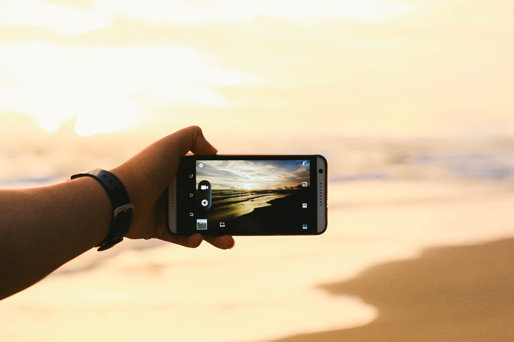

LA FOTO
PHOTOGRAPHY
CAMERA
GALLERY
11 พฤศจิกายน พ.ศ.2560 ระหว่างทางกลับบ้าน
ยังน่ารักเหมือนเดิม ไอโบ้เจ้าเก่าประจำชายหาด(คิดถึง) ...
5 มีนาคม พ.ศ.2561 เวลา05:45 น. เป็นตอนเช้าที่พิเศษว่าทุกวันเพราะเป็นวันเกิดของพี่ชายฉัน
"มีความสุขมากๆนะครับ"
18 มีนาคม พ.ศ.2560 วันนี้เดินกลับบ้านนะ อีกไม่กี่อาทิตย์ก็จะจบแล้วสินะ(ชีวิตมัธยม) ชีวิตมันรวดเร็วเหมือนมอไซคันนี้แหละ
23 มกราคม พ.ศ.2560 อ่านหนังสือตั้แต่เช้า พอออกมาเจอทะเลมันช่วยให้หายเหนื่อยขึ้นเลย
(รักทะเล)
15 มิถุนายน พ.ศ.2561 ทำไมเราไม่เคยเบื่อทะเลเลย หรือเราคิดถึงคนที่อยู่แถวทะเล
26 เมษายน พ.ศ. 2560 มีโอกาศได้ไปดูผลงานของพวกรุ่นพี่ คุณภาพทุกชิ้นเลยครับ สถาปัตย์ก็น่าเรียนเหมือนกันนะ
18 ธันวาคม พ.ศ. 2559 หน้าหนาวปีนีี้ไม่ค่อยหนาวเท่าไหร่ บนนี้สูงมากแต่ก็สวยมาก
1 มกราคม พ.ศ. 2559 เวลา 00:01 น. HAPPY NEW YEAR ยินดีต้อนรับปีใหม่ รวดเร็วเหมือนเคยทุกๆปี
18 ธันวาคม พ.ศ. 2559 ข้างบนไม่เหมือนข้างล่าง เชียงใหม่ก็ไม่เหมือนกรุงเทพ ที่นี้หนาวมากกกกกกกก
31 ธันวาคม พ.ศ. 2559 ทุกคนออกมาส่งท้ายปีเก่าที่กำลังจะมาถึงในอีกไม่กี่ชั่วโมง 2559 เป็นปีที่รวดเร็วเหมือนเคย
1 มกราคม พ.ศ. 2559 เป็นการเฉลิมฉลองวันขึ้นปีใหม่ที่เกิดขึ้นอีกฝั่งของชายหาดแม่รำพึง วันนี้ทุกคนดูมีความสุข
25 มีนาคม พ.ศ.2559 วันสุดท้ายของหน้าหนาว ทะเลกำลังจะกลับมาครึกครื้นอีกครั้ง
2 พฤศภาคม พ.ศ.2561 เมื่อสายตาทอดไปเห็นแม่ลูกคู่หนึ่งกำลังลอยโคมอยู่ที่โขดหินริมชายหาดของทะเลช่างเป็นภาพที่ให้ความรู้สึกมีความ...
11 มีนาคม พ.ศ.2559 การอยู่ให้รอดนั้นเป็นเรื่่องของร่างกาย แต่การอยู่อย่างมีความหมายนั้นเป็นเรื่องของจิตใจ
12 มิถุนายน พ.ศ.2558 เราใช้เวลากับจุดมุ่งหมายไม่นานนัก เมื่อถึงจุดมุ่งหมายทีไร เราก็มักมองหาจุดหมายใหม่ ที่ไกลออกไปเสมอ...
23 ธันวาคม พ.ศ.2561 บางครั้งเรายอมแพ้ เพราะแค่กลัวว่าจะไม่ชนะ
24 ธันวาคม พ.ศ.2561 ความเหลวไหล มักจะ น่าหลงไหล
24 ธันวาคม พ.ศ.2561 ทุกที่มีความเศร้าตราบที่เรา พกมันติดไปด้วย
24 ธันวาคม พ.ศ.2561 ความล้มเหลวไม่มีจริง เราแค่ยังไม่สำเร็จเท่านั้นเอง
13 พฤศจิกายน พ.ศ.2558 ทุกคนมีความฝัน น้อยคนยังมีมันอยู่
16 มีนาคม พ.ศ.2559 ช้าในต่างแดน ดูสดใสกว่าทุกเช้า ในที่เดิมๆ อาจเพราะมันเป็นเช้าที่เต็มไปด้วยสิ่งใหม่ๆ ที่รอการไปเห็นจากเรา
1 กุมภาพันธ์ พ.ศ.2562 แสงของดวงอาทิตย์ที่กำลังจะลับขอบฟ้ากระทบกับผิวของน้ำทะเลทำให้รู้สึกอบอุ่นเหมือนดวงไฟเล็กๆที่อยู่ในหัวใจ
12 พฤศจิกายน พ.ศ.2558 ในหนึ่งชีวิตของคนเรานั่นต้องมีช่วงเวลาที่แสนโหดร้ายเราต้องเข้มเเข็งและอดทนเพื่อก้าวข้ามผ่านสิ่งต่างๆที่เราได้เจอ...
28 ธันวาคม พ.ศ.2558 มองท้องฟ้า บางคนรอสายรุ้ง บางคนรอดาวตก บางคนรอดาวหาง บางคนมีความสุขกับก้อนเมฆ
25 ธันวาคม พ.ศ.2561 อย่ารังเกียจความเศร้า มันเป็นเส้นทางระยะหนึ่ง ก่อนไปถึงความสุข
9 เมษายน พ.ศ. 2560 รุ่งอรุณของวันเก่าที่กำลังจะลับขอบฟ้าไป ทุกสิ่งบนโลกต้องดำเนินต่อไป...
13 พฤศจิกายน พ.ศ.2559 เมื่อกล้าหวัง ก็ต้องกล้าผิดหวัง

27 กันยายน พ.ศ.2558 บางทีอดคิดไม่ได้ว่าเราเกิดมาเพื่อหาวิธีอยู่กับความเศร้าให้สุขที่สุด
11 มีนาคม พ.ศ.2559 ทุกอย่างมีอายุขัยของมัน ความสุขก็เช่นกัน
16 พฤศจิกายน พ.ศ.2558 เช้าในต่างแดน ดูสดใสกว่าทุกเช้า ในที่เดิมๆ อาจเพราะมันเป็นเช้าที่เต็มไปด้วยสิ่งใหม่ๆ...
5 ธันวาคม พ.ศ.2558 ความสุขคนเดียวอายุสั้น ความสุขที่แบ่งปันอายุยืน
6 พฤศจิกายน พ.ศ.2558 บางทีอดคิดไม่ได้ว่าเราเกิดมาเพื่อหาวิธีอยู่กับความเศร้าให้สุขที่สุด